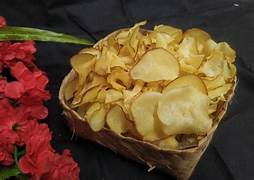

Keripik Singkong
Olahan singkong renyah dengan berbagai varian rasa.
Dusun Ploso tumbuh dari komunitas agraris yang menjunjung tinggi nilai kebersamaan. Seiring perjalanan waktu, tradisi lokal dan potensi sumber daya alam membentuk identitas sosial budaya yang tetap terjaga hingga kini.
Cerita para sesepuh, kegiatan adat, serta peninggalan masa lampau menjadi bagian penting dalam narasi sejarah dusun. Hal ini menjadi pondasi bagi semangat gotong royong dan pengembangan ekonomi masyarakat.
Ragam usaha mikro kecil menengah yang digerakkan warga untuk kemandirian ekonomi.
Olahan singkong renyah dengan berbagai varian rasa.

Motif khas lokal yang mencerminkan kearifan budaya setempat.
Bijian pilihan dari kebun warga, diolah secara tradisional.
Produk kerajinan tangan fungsional dan estetis.
Temukan lokasi yang menonjol untuk dikunjungi di sekitar dusun.

Pusat kegiatan warga dan pertemuan rutin.
Ruang ibadah dan kegiatan keagamaan masyarakat.
Lanskap hijau untuk bersantai dan edukasi pertanian.
Ruang publik untuk rekreasi ringan dan kegiatan warga.
Untuk informasi lebih lanjut terkait Dusun Ploso, silakan hubungi perangkat dusun setempat.